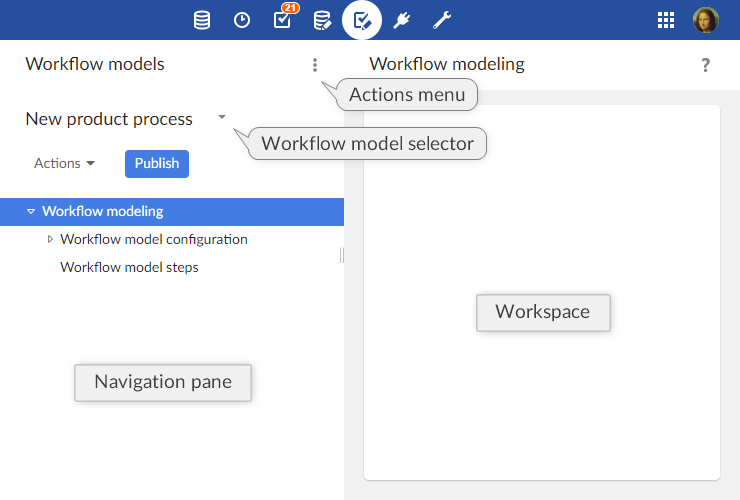

Introduction to workflow models
Overview
What is a workflow model?
Workflows in TIBCO EBX® facilitate the collaborative management of data in the repository. A workflow can include human actions on data and automated tasks alike, while supporting notifications on certain events.
The first step of realizing a workflow is to create a workflow model that defines the progression of steps, responsibilities of users, as well as other behavior related to the workflow.
Once a workflow model has been defined, it can be validated and published as a workflow publication. Data workflows can then be launched from the workflow publication to execute the steps defined in the workflow model.
Basic concepts related to workflow models
A basic understanding of the following terms is necessary to proceed with the creation of workflow models:
Using the Workflow Models area user interface

Note
This area is available only to authorized users in the 'Advanced perspective'. Only authorized users can access these interfaces.
Generic message templates
Notification emails can be sent to inform users of specific events during the execution of data workflows.
Generic templates can be defined and reused by any workflow model in the repository. To work with generic templates, select 'Message templates' from the Workflow Models area Actions menu.
These templates, which are shared by all workflow models, are included statically at workflow model publication. Thus, in order to take template changes into account, you must update your existing publication by re-publishing the affected models.
Please note that, if you want to export those templates in an archive, you will have to select the dataset "configuration" as it is the one containing the message templates.
When creating a new template, two fields are required:
Label & Description: Specifies the localized labels and descriptions associated with the template.
Message: Specifies the localized subjects and bodies of the message.
The message template can include data context variables, such as ${variable.name}, which are replaced when notifications are sent. System variables that can be used include:
system.time | System time of the repository. |
system.date | System date of the repository. |
workflow.lastComment | Last comment on the previous user task. (Note: this variable refers to the last user task, not the current one. Also the current task is the one on which the workflow is positioned, and it also includes the completion notification of a user task). |
workflow.lastDecision | Last decisions made on the previous user task. (Note: this variable refers to the last user task, not the current one. Also the current task is the one on which the workflow is positioned, and it also includes the completion notification of a user task). |
user.fullName | Full name of the notified user. |
user.login | Login of the notified user. |
workflow.process.label | Label of the current workflow. |
workflow.process.description | Description of the current workflow. |
workflow.workItem.label | Label of the current work item. |
workflow.workItem.description | Description of the current work item. |
workflow.workItem.offeredTo | Role to which the current work item has been offered. |
workflow.workItem.allocatedTo | User to whom the current work item has been allocated. |
workflow.workItem.link | Link to access the current work item in the work item inbox, using the Web Component API. This link can only be computed if a current work item is defined and if the URL is configured in Workflow-executions, in the email configuration. |
workflow.workItem.link.allocateAndStart | Link to access the current work item in the work item inbox, using the Web Component API. If the target work item has not yet been started, it will be automatically allocated to and started by the user clicking the link. This link can only be computed if a current work item is defined and if the URL is configured in Workflow-executions, in the email configuration. |
workflow.currentStep.label | Label of the current step. |
workflow.currentStep.description | Description of the current step. |
Example
Generic template message:
Today at ${system.time}, a new work item was offered to you
Resulting email:
Today at 15:19, a new work item was offered to you
Limitations of workflows
The following functionality is currently unsupported in EBX®:
Scheduled tasks, task executed as soon as its turn comes, and whose execution cannot be delayed.
Event tasks, allowing the workflow to move forward upon receiving an event, such as a web service call.
Time limitation on a task duration.
Related concepts
 User guide table of contents
User guide table of contents